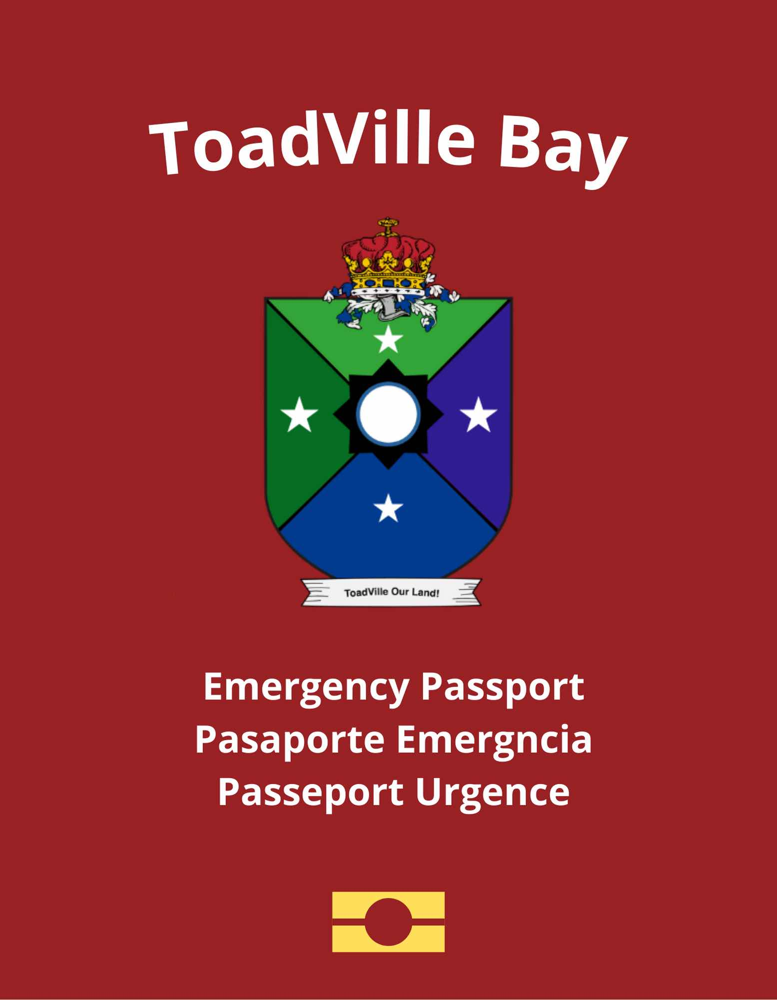

Emergency Passport (ToadVille Bay)

Note: this is a cosmetic item in the ToadVille Bay Game and not a real life item.
Note: This item is also called an Alert Passport in ToadVille Bay Game
About Emergency Passport
An Identity Document (or Alert Passport) is an item issued by Insitute National Migration, it is issued at a Consulate of ToadVille Bay for citizens who lost their passport, has their passport expired, and or got stolen, such passport are issued very fast, only has one visa page. It is also issued to citizens born abroad when registered at a consulate.
How to get one
- Must be abroad
- Be registered abroad to get one
- Must prove citizenship.
- This document last for 6 months.
Why is this passport so small? What happens after I get back to ToadVille Bay? Can I use this for travel?
Once you get back to ToadVille Bay, you must show this passport to customs, the passport will then be voided as its a one time use thing, hence why it only has one visa page, then you will be given a document that is used to get a new passport, no cost. You cannot use this to travel at all
Do countries accept this document
- No, this is not a travel document to other countries, it is only used to get to ToadVille Bay.
Note: RETURN TO TOADVILLE BAY AFTER GETTING THIS ITEM AS IT EXPIRES IN A SHORT TIME.